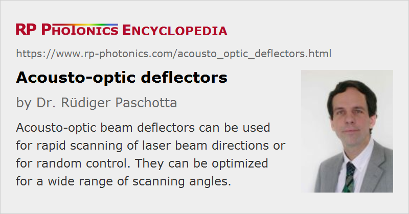

Acousto-optic Deflectors
Acronym: AO deflector, AOBD
Definition: acousto-optic devices for deflecting and scanning laser beams
German: akustooptische Strahlablenker
How to cite the article; suggest additional literature
Author: Dr. Rüdiger Paschotta
Acousto-optic deflectors are devices which can be used to deflect a laser beam in one direction by a variable angle, controlled by the frequency of an electrical signal.
Essentially, such a device is an acousto-optic modulator which is operated with an electrical drive signal of constant power but a variable frequency. The direction of the diffracted beam is determined by a Bragg condition, which contains the sound wavelength and thus depends on the sound frequency. For an isotropic medium, the deflection angle, which is twice the Bragg angle, can be calculated from the Bragg condition as approximately

where λ is the optical vacuum wavelength, f is the drive frequency (which equals the acoustic frequency) and v is the velocity of the sound wave in the acousto-optic material. (Inside the material, the angle would need to be calculated with the optical wavelength inside the material, but for the external angle, which is relevant for the application, one needs to use the vacuum wavelength.) The result can also be recognized as the ratio of optical wavelength and acoustic wavelength; the latter is v / f and is typically between 10 μm and 100 μm.
For anisotropic diffraction (e.g. in a birefringent medium), which has advantages particularly for beam deflectors, calculations are more complicated.
The resulting deflection angles are usually quite small, since the acoustic wavelength is much longer than the optical wavelength. For example, for a 1064-nm laser beam in fused silica with a sound velocity of 5.9 km/s of longitudinal waves and a modulation frequency of 100 MHz (where the acoustic wavelength is 59 μm), one obtains an angle of 18 mrad ≈ 1°. This is small, but still roughly 10 times then beam divergence for a Gaussian beam with 200 μm beam radius in the focus.
The zero-order (non-diffracted) beam is usually blocked with a beam dump, since it cannot be used.
The used acousto-optic device may in principle be the same as for an ordinary AOM, only that the used electronic driver (see below) is different. However, the device can be optimized as a wide-range beam deflector:
- It can be made such that it works in a wide range of acoustic frequencies. That reasoning excludes resonant acoustic designs; one needs to use a device with a piezo transducer on one end and a sound absorber on the other end of the acousto-optic crystal, as shown in Fig. 1. The phase matching of the diffraction process (which cannot be perfectly maintained for variable acoustic frequencies) also needs to be considered. Particularly wide frequency ranges are achieved in certain cases with anisotropic diffraction, e.g. with shear waves in TeO2 crystals.
- One may chose a material with slow acoustic velocity, because that maximizes the angular range for a given range of acoustic frequencies, as one can see from the equation above. Quite low sound velocities of well below 1 km/s = 1 mm/μs are achieved for shear waves (in contrast to longitudinal waves) e.g. in TeO2.
The slight modification of the optical frequency of the diffracted beam is usually irrelevant for applications of beam deflectors.
By combining two acousto-optic deflectors which are mounted orthogonally, one may steer a laser beam in two dimensions.
Beam-steered Deflectors
Usually, the direction of the sound wave would be constant, i.e., not dependent on the sound frequency. However, there are deflectors based on acoustic beam steering where the direction of the sound wave is controlled such that a wider range of scanning angles with nearly constant diffraction efficiency can be achieved. This is done by using a sound transducer with an array of electrodes, which are driven with different electrical phases.
RF Drivers for Beam Deflectors
In contrast to an acousto-optic modulator, a beam deflector requires an RF driver with constant drive power but variable frequency. Often, it contains a voltage-controlled oscillator (VCO), the frequency of which can be adjusted with an analog input drive signal. If the frequency depends linearly on the drive voltage, the same holds with good accuracy for the beam direction.
For achieving a nearly constant diffraction efficiency over a large frequency range, one may have to increase the drive power for the extreme frequencies.
A high frequency stability is important for obtaining a stable output beam direction for a constant input signal.
For driving a beam-steered deflector, one requires multiple RF outputs with different phases.
Essential Device and Performance Figures
Angular Range and Resolution
As explained above, the angular range of the diffracted output beam is limited by the applicable range of the acoustic frequencies (= drive frequencies), and it is inversely proportional to the sound velocity in the material. Usually, the usable range of deflection angles is rather small – a few degrees. This is because the usable acoustic wavelength is far longer than the optical wavelength. However, the angular range can be much larger than the beam divergence. It is of course possible to amplify the angular range with additional optical elements, e.g. with a telescope which at the same time reduces the beam radius and increases the beam divergence.
The scanning resolution is generally understood to be the ratio of the range of scan angles to the beam divergence; it is something like the number of different directions (or spots, after focusing the beam) which can be addressed. A minimum beam divergence is achieved by maximizing the beam radius of the collimated input beam (limited by the aperture size) while maintaining a high (ideally diffraction-limited) beam quality. Therefore, AO deflectors should usually not be operated with unnecessarily strong focusing of the input beam. On the other hand, a too large input beam can cause diffraction effects which can also be detrimental for the application.
The number of resolvable spots can also be understood as the product of the aperture time (the transit time of the acoustic wave through the laser beam) multiplied with the width of the acoustic frequency range. This product is sometimes called time–bandwidth product and should not be confused with the time–bandwidth product of ultrafast laser physics.
Diffraction Efficiency
An important performance figure is the diffraction efficiency, which is typically of the order of 50% (and tentatively lower for longer optical wavelengths). In most applications, the non-diffracted (zero-order) beam is not usable. It is desirable that a high diffraction efficiency is achieved not only for some optimal drive frequency, but in a substantial range of frequencies.
Scanning Speed
The speed of the angular scanning may be limited by the electronic driver or by the acousto-optic device – in the latter case, the finite velocity of sound is the limiting factor. Unfortunately, that velocity often has to be minimized in order to obtain a wide range of scan angles.
For fast scanning, one may obtain a lensing effect, where different parts of the laser beam are in a certain moment of time are reflected in different directions because they see different sound frequencies in the acousto-optic material.
Aperture Size
Devices also differ in terms of the size of the open aperture. Often, the aperture size is quite different in horizontal and vertical direction. Therefore, one often uses cylindrical lenses before and after the deflector in order to operate it with an elliptical laser beam.
In cases where beams with large beam radius are not required, it is often better to use a deflector with small input aperture, as that tentatively reduces the amount of drive power and increases the maximum scanning speed. However, for highest resolution (see below) one requires a large input beam.
Pointing Stability
The stability of the obtained beam direction is limited by the stability of the used RF driver. Such a driver usually obtains an analog control voltage which translates into a drive frequency, and that frequency may be subject to thermal drifts. Such drifts have an increased impact on the beam direction for modulators with slow acoustic velocity.
Applications of Acousto-optic Deflectors
Typical applications are those where very fine and possibly rapid deflection of a laser beam is required; some examples are:
- photolithography
- laser displays
- optical tweezers
- beam-addressed optical memory
- optical inspection
- signal processing (often exploiting the frequency-dependent diffraction angles, e.g. in conjunction with a photodiode array for analysis of optical spectra)
Suppliers
The RP Photonics Buyer's Guide contains 10 suppliers for acousto-optic deflectors.
Questions and Comments from Users
Here you can submit questions and comments. As far as they get accepted by the author, they will appear above this paragraph together with the author’s answer. The author will decide on acceptance based on certain criteria. Essentially, the issue must be of sufficiently broad interest.
Please do not enter personal data here; we would otherwise delete it soon. (See also our privacy declaration.) If you wish to receive personal feedback or consultancy from the author, please contact him e.g. via e-mail.
By submitting the information, you give your consent to the potential publication of your inputs on our website according to our rules. (If you later retract your consent, we will delete those inputs.) As your inputs are first reviewed by the author, they may be published with some delay.
See also: acousto-optic modulators
and other articles in the category photonic devices
|  |
If you like this page, please share the link with your friends and colleagues, e.g. via social media:
These sharing buttons are implemented in a privacy-friendly way!